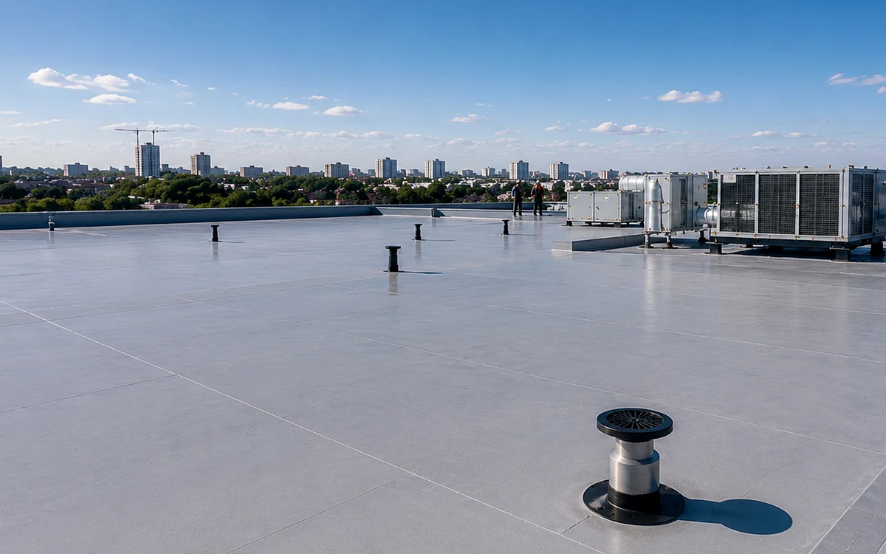

Перед зимним сезоном стоит проверить водостоки, крепления, конёк, снегозадержатели, примыкания и состояние покрытия.
С чего начинается правильное решение
Подготовка кровли к зиме: что проверить заранее стоит рассматривать не отдельно от здания, а как часть всей кровельной системы. На результат влияют уклон скатов, состояние основания, вентиляция, крепление, водоотведение и качество выполнения узлов. Перед выбором материала нужно понять, как крыша будет работать в условиях конкретного объекта.
В Харькове и области кровли часто отличаются геометрией, состоянием древесины и режимом эксплуатации. Для частного дома важны тишина, аккуратный внешний вид и стабильный микроклимат под крышей. Для коммерческого или хозяйственного объекта чаще смотрят на длину скатов, нагрузку, обслуживание и доступ к техническим зонам.
Что проверяют на объекте
Во время осмотра проверяют не только видимое покрытие. Смотрят на подготовка кровли к зиме, состояние стропил, обрешётку, контробрешётку, мембраны, конёк, ендовы, карниз, примыкания к стенам и проходы через крышу. Если один элемент выполнен неправильно, это влияет на работу всей системы.
- форма, уклон и длина скатов
- состояние древесины, основания и мембран
- карниз, конёк, ендовы и примыкания
- вентиляция и защита от влаги
- водосток и доступ для обслуживания
Узлы, которые нельзя игнорировать
Отдельное внимание нужно зоне карниза и конька. Через эти участки формируется движение воздуха, выводится влага и стабилизируется подкровельное пространство. Для материалов на основе металла важно не допустить накопления конденсата, а для утеплённых крыш правильно отделить тёплый воздух из помещения от холодных зон конструкции.
Хорошее решение всегда начинается с последовательности. Сначала оценивают конструкцию, затем определяют тип покрытия, после этого продумывают мембраны, крепление, доборные элементы и порядок монтажа. Такой подход помогает избежать хаотичных переделок и сохранить аккуратную геометрию крыши.
Типичные ошибки
Самая частая ошибка, смотреть только на внешний вид покрытия. На практике водосток и снегозадержатели часто имеют не меньшее значение, чем сам материал. Если основание неровное, вентиляция перекрыта или узлы выполнены без логики, даже качественное покрытие не даст ожидаемого результата.
Что подготовить перед работами
Для первичного разбора подготовьте фотографии дома с разных сторон, доступ к чердаку и сведения о предыдущих работах. Карнизы и водосток также стоит показать.
Популярные вопросы
Достаточно ли фото для предварительной оценки?
По снимкам можно сделать первичную оценку, но состояние основания и узлов определяют при осмотре.
Почему важно смотреть на всю систему?
Покрытие, мембраны, вентиляция, крепление и водоотведение должны работать как одна система.